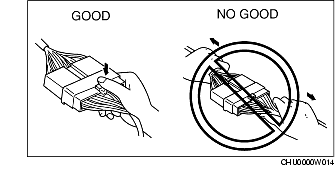
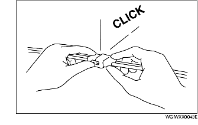
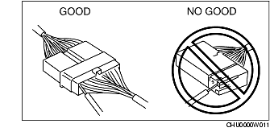

ELECTRICAL SYSTEM
B3E000000006101
Connectors
Disconnecting connectors
-
• When disconnecting connector, grasp the connectors, not the wires.

-
• Connectors can be disconnected by pressing or pulling the lock lever as shown.

Locking connector
-
• When locking connectors, listen for a click indicating they are securely locked.

Inspection
-
• When a tester is used to inspect for continuity or measuring voltage, insert the tester probe from the wiring harness side.

-
• Inspect the terminals of waterproof connectors from the connector side since they cannot be accessed from the wiring harness side.
-
Caution
-
• To prevent damage to the terminal, wrap a thin wire around the tester probe before inserting into terminal.